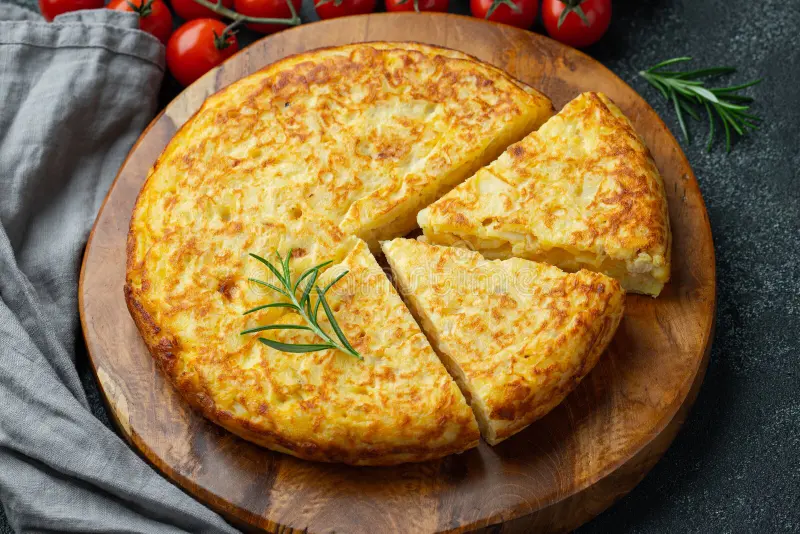

Spanish tortille

From the lands of Don Qixote to the world
The Spanish tortille or Spanish omelette is a traditional dish of ibero-american cuisine.
Ingredients for four people
- 2 kilograms of potatoes
- 7 large eggs
- half cup of oil
- salt and pepper to taste
Steps
- Peel all the potatoes and cut them into cubes
- Preheat the oven to 250 degrees Celsius
- Season the potatoes with salt and pepper and coat them with the oil
- Put the seasoned potato cubes on a tray and bake in a preheated oven for about 30 minutes
- Beat the eggs
- When the potatoes are golden brown, take them out of the oven and mix them with the beaten eggs
- Oil a 24 centimetre frying pan and pour the mixture into it, cook for seven minutes per side depending on whether you like drier or wetter
- Let stand for five minutes and serve